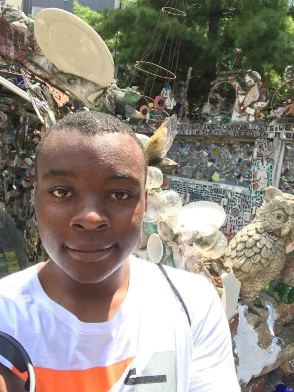
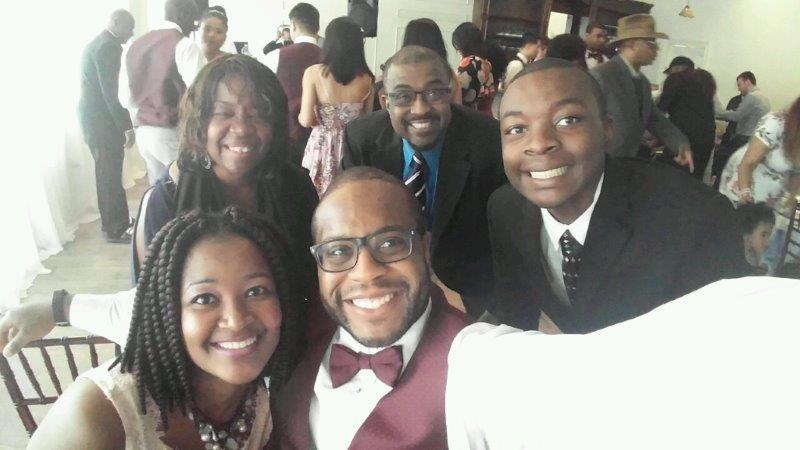

What Makes Me Me?
My name is Jonathan Aner. I am a rising sophomore Computer Science major attending Hampton University. I am from Philadelphia, the city of brotherly love and home of the world's greatest cheesesteaks. A suggestion from me is if you don't want to look like a 'tourist' don't go to Pat's or Gino's for cheesesteaks. I think some of the things that make me who I am today is being raised in Philly, being surrounded by my friends and family and being a Christian.
Philly is a great city full of history, art and amazing food. I love the city, but that wasn't always the case for me. From a vistor's point of view, you would probably see the city as a somewhat pristine city with the iconic Rocky Statue and the steps which he climbed from his iconic scene.When you have lived in Philly, you see the abudance of homelessness and the severity of struggling communities. I am disappointed this city that people love so much be treated like the trash on street. Now, I find the beauty in the city because all of the memories I have had here all the way from my youth to know. I would like to see my city's communities improve and the amount homelessness decrease.
My family has been my rock and they have always stood beside me and I truly appreciate them. They have been a great example of what love should be. I feel truly privelleged to have a family that loves me even though their beliefs go against my own. They raised me around the love and I always accepted it. My friends have always been supportive and I have tried my bestdo the same for them. My friends have been the ones to encourage me to do things that I never thought I could. Just as my friends encourage me I will always do the same.
My parents raised me around Christian beliefs and I believe it evoked discipline and maturity in me. When I was born,my parents gave me a life verse that says "For I know the plans, I have for you. Plans to prosper you not to harm you and to give you hope for the future." I believe that God is always looking over me and he knows what is to come, so I know there is no reason to fear. However, one of the biggest things I hold as a Christian is the value of love. Love is powerful and it overcomes all. I believe that everyone deserves love and respect.